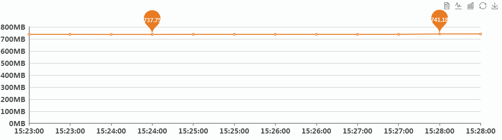
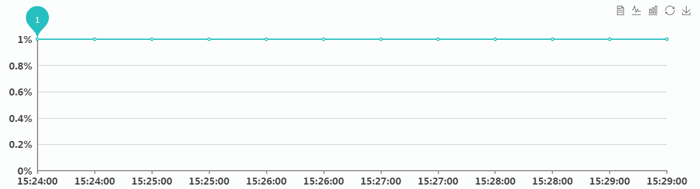

<div ui-view="header"></div>
<div class="warp "  style="margin-top:20px;">
    <div class="pd-30" style="background:#fff;">
       <h3 class="mb-10 f16">资源监控</h3>
        <div class="mb-20">
            <table class="access_amount_table ">
                <tr>
                    <td width="25%">IP地址</td>
                    <td width="25%">内存占用（MB）</td>
                    <td width="25%">CPU占用(%)</td>
                    <td width="25%">服务状态</td>
                </tr>
                <tr>
                    <td>{{vm.linuxIp}}</td>
                    <td>{{vm.memory}}</td>
                    <td>{{vm.cpu}}</td>
                    <td>{{vm.responseStatus}}</td>
                </tr>
            </table>
        </div>
        <div class="data_time_statis_bot">
            <ul>
                <li>
                    <p class="tc mb-10">使用内存-1天</p>
                    <div class="flow_echart" id="main">
                        <!---->
                    </div>
                </li>
                <li>
                    <p class="tc mb-10">CPU占用率-1天</p>
                    <div class="flow_echart" id="mainCpu">
                        <!---->
                    </div>
                </li>
            </ul>
        </div>
    </div>
</div>
